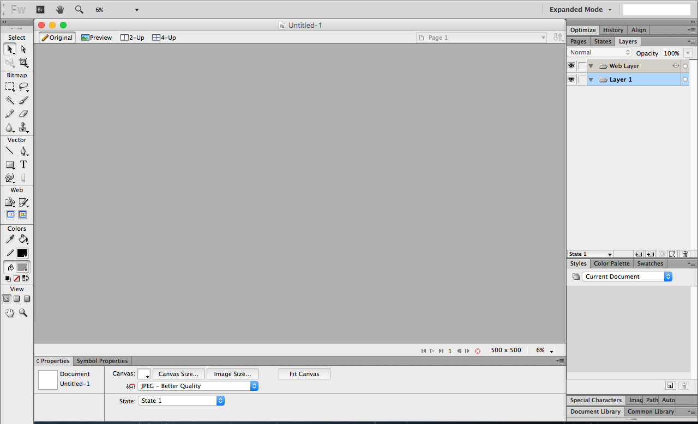
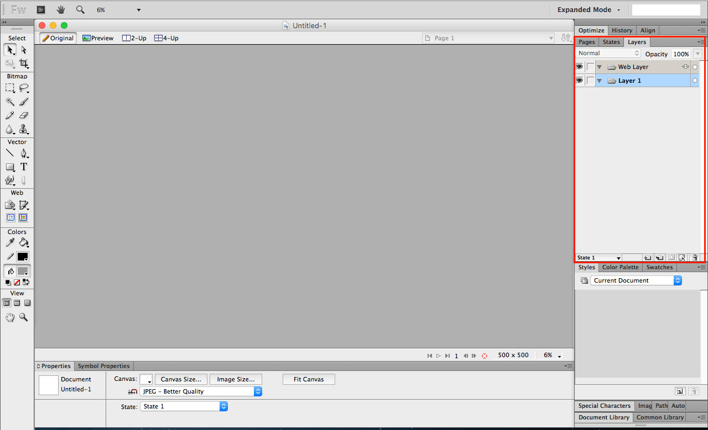
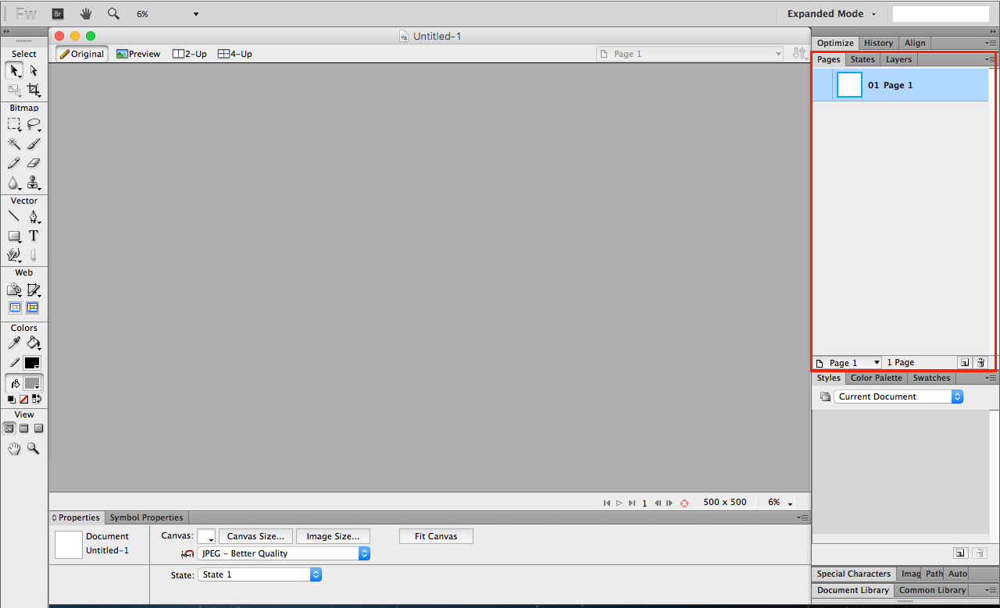
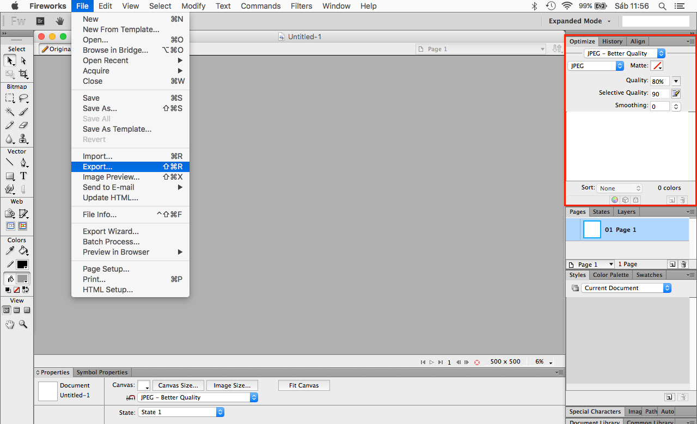
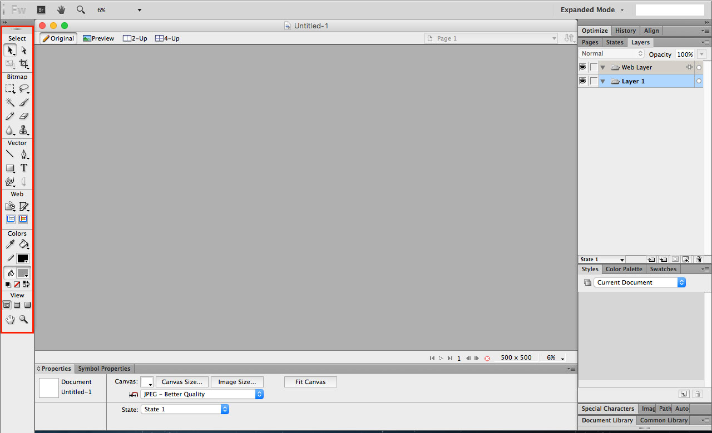

Treinamento
Corte e Montagem
de HTML/CSS
Do PSD ao HTML5
Photoshop, Fireworks, HTML5, Bootstrap,
Fonticons, CSS3, SASS, Gulp e Bower
Adobe Photoshop
Edição de layout e funcionalidades
básicas para exportar imagens
Adobe Photoshop
- Ocultando e exibindo
- Exportando filtros
- Alterando a ordem
- Selecionando objetos
- Como funciona
- Presets
Adobe Photoshop / Interface

Adobe Photoshop / Camadas

Adobe Photoshop / Layercomps

Adobe Photoshop / Save for Web

Adobe Photoshop / Save for Web

Adobe Photoshop / Tools

Adobe Photoshop
Vamos praticar!
Adobe Fireworks
Edição de layout e funcionalidades
básicas para exportar imagens
Adobe Fireworks
- Ocultando e exibindo
- Exportando filtros
- Alterando a ordem
- Selecionando objetos
- Como funciona
- Presets
Adobe Fireworks / Interface
Adobe Fireworks / Interface
Adobe Fireworks / Interface
Adobe Fireworks / Interface
Adobe Fireworks / Tools
Adobe Fireworks
Vamos praticar!
Por hoje é só...
...veremos amanhã
Formatos de imagem
Entendendo as partes de um layout
Prática: Exportando as imagens do seu layout